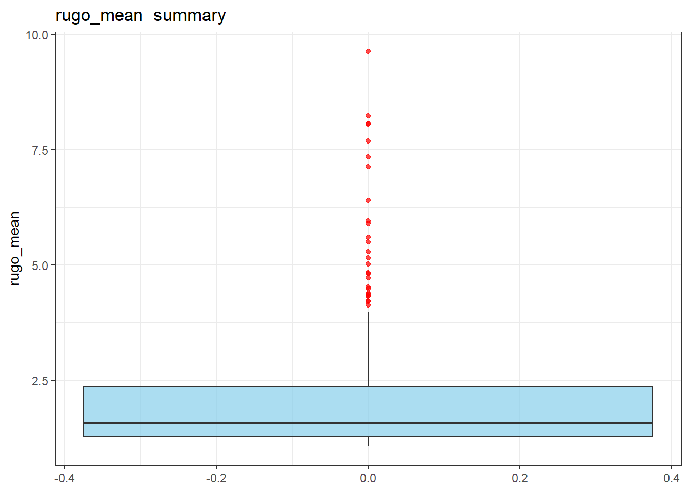
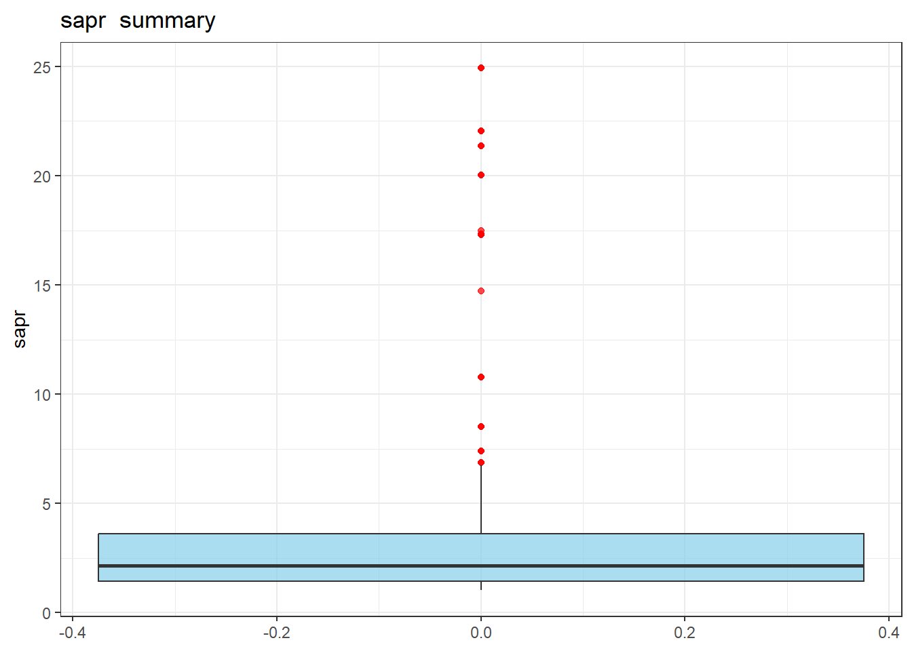
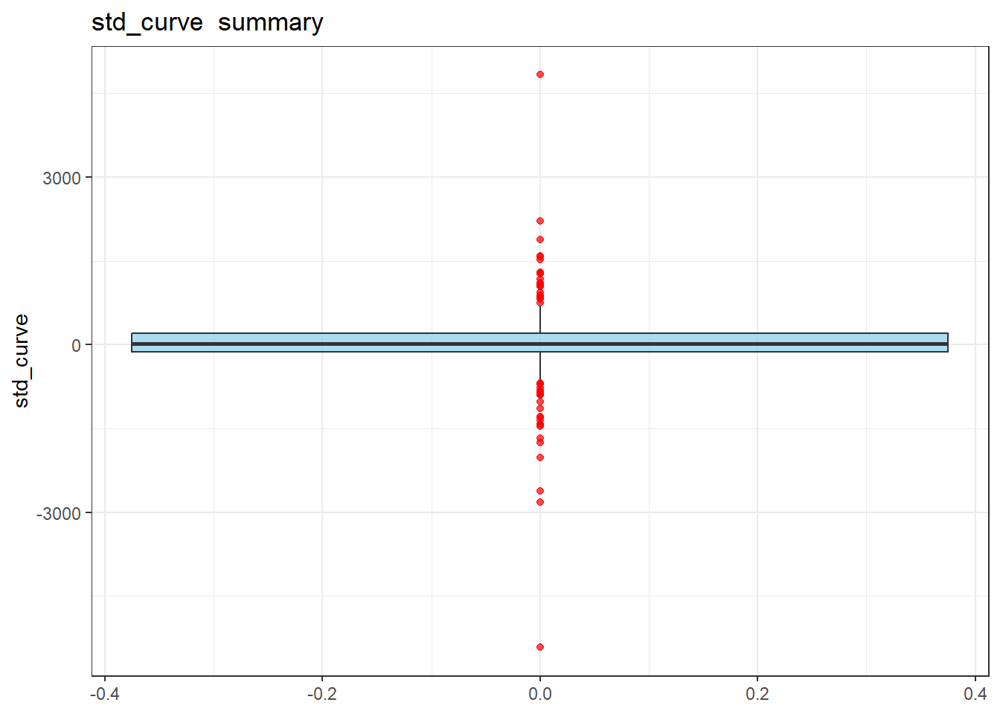
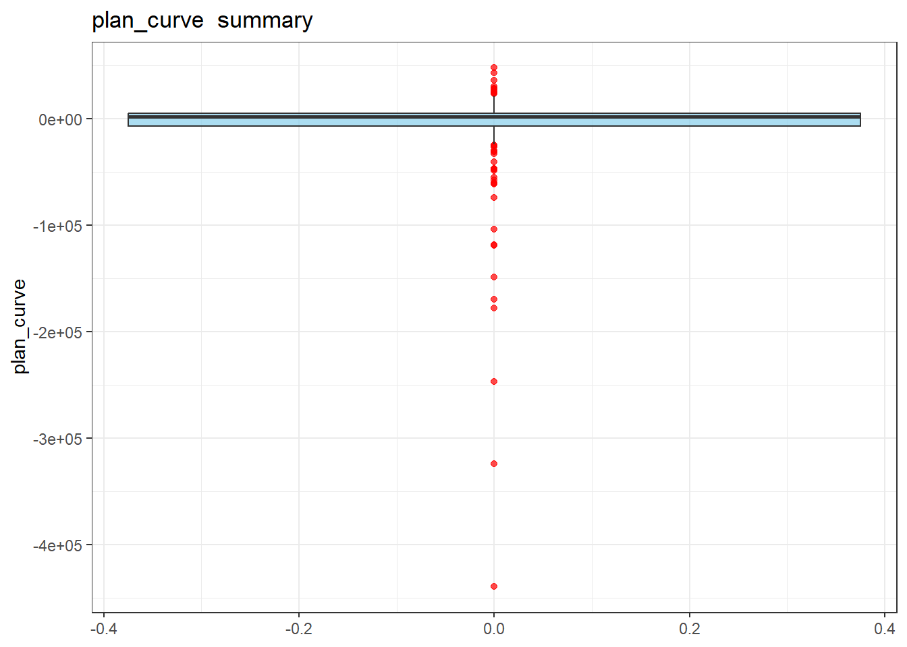
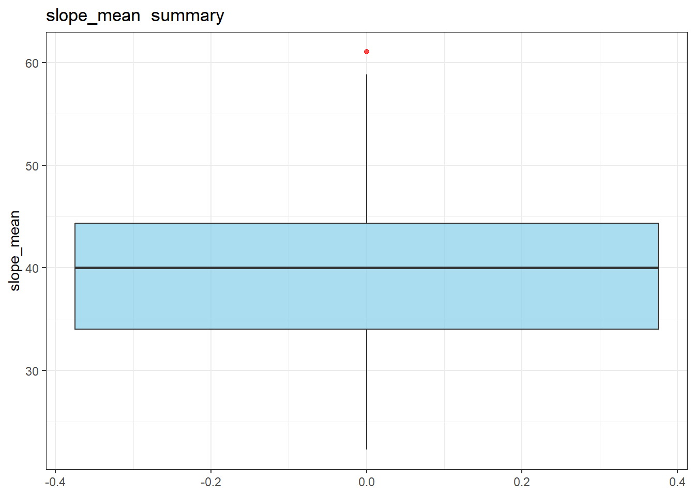
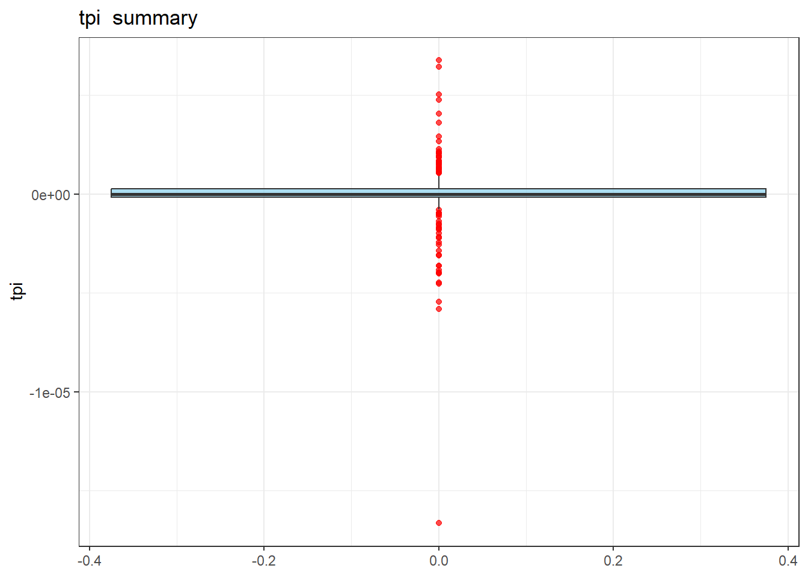
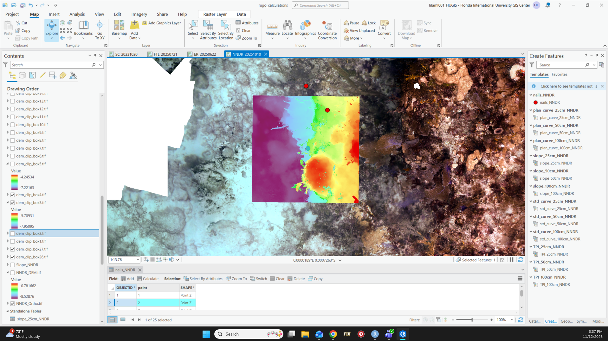
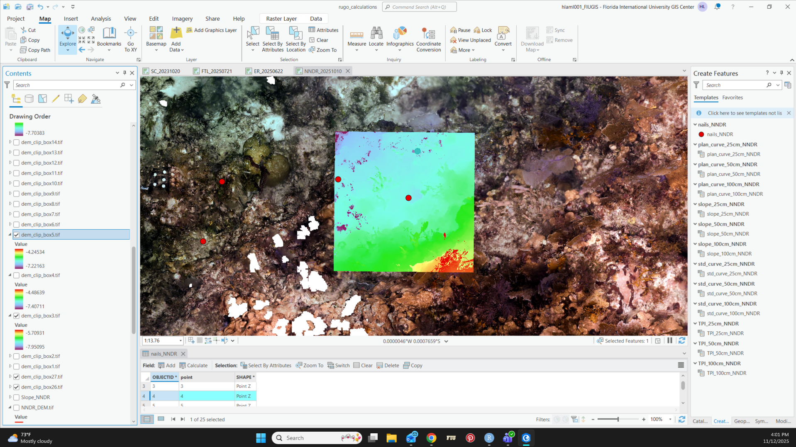
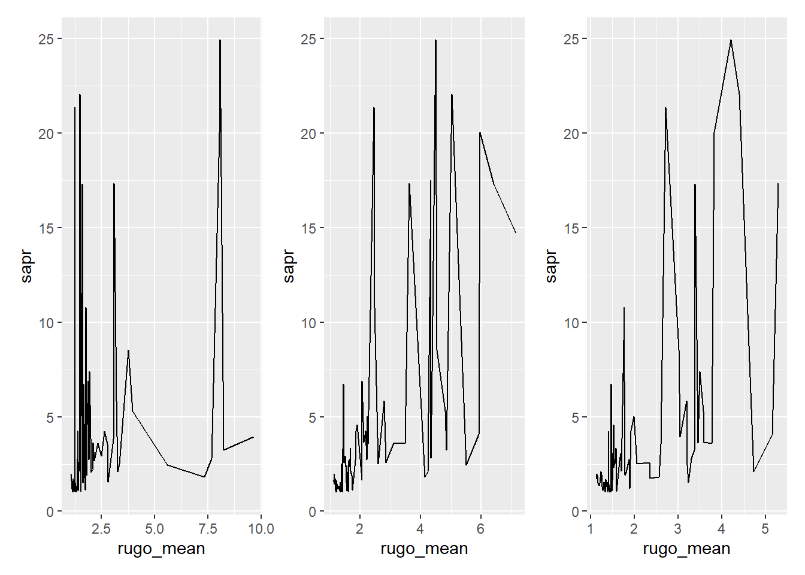

LSAT Modelling Round 2 - Outliers and Data questionability
From the preliminary models sent Sunday, 11/9, here was the feedback from Rolo:
Check outliers, confirm if true and remove,
standardize all metrics
Run three separate models with all of the metrics but varying the scale, then compare the best model based on AICc
After selecting best model, simplify using the dredge function
Fit the best most parsimonious model
Identify and remove outliers:
I plotted box plots of each predicor variable (combining sites and scales) to determine if outliers are present and where. This data may look a bit different from the original file I sent because at that time I was still also finishing up processing the NNDR site in Viscore and GIS and didn’t include those in the first round I sent.
vars_of_interest <-c("rugo_mean", "sapr", "std_curve", "plan_curve","slope_mean", "tpi")for (v in vars_of_interest) { p <- master %>%ggplot(aes(y = .data[[v]])) +geom_boxplot(fill ="skyblue", alpha =0.7, outlier.color ="red") +theme_bw() +ggtitle(paste(v, " summary"))print(p)}
Warning: Removed 1 row containing non-finite outside the scale range
(`stat_boxplot()`).






Okay, so there’s quite a few statistical outliers, but are they “true”?
Mean rugosity:
I only checked the top most point. It is from NNDR, after inspecting the DEM I don’t think this is a “true” outlier, it just is that rugose at that area. There is a dead coral head that goes straight up into the air in the area where rugosity was being calculated and there isn’t any crazy points in the point cloud that are super high up (that I can see) that would inflate rugosity.
Surface Area to Planar Area Ratio (SAPR):
The 30 top highest points are from the NNDR site, which is a spur and groove reef with a difference of 4m between the sand and the top of the spur. Thus it’s going to be a lot more rugose than the other three sites which are relatively flat.
However, when looking at the top six points in the boxplot, it is the 100cm, 50cm and 25cm SAPR for LSAT points 2 and 4. I’m attaching a screenshot of what the boxes look like, but I don’t know if I would consider this an outlier or not. The reason why it has such an inflated SAPR value is because it includes overhang from the top of the spur (see below image, the purple seafloor, blue “shelf” that’s higher and hanging over, similarly with the green and yellow/red areas).

Standard Curve:
The highest and lowest point in the Standard Curve boxplot comes from NNDR LSAT points 5 and 6. These two data points I think could be true outliers. You can see in the images below in the DEM that there is weird sporadic deep patches (dark purple) where other parts of the DEM would have a more gradual transition to deeper sites since there isn’t an overhang here to cause a quick dropoff.
I think this part of the DEM is not very good and perhaps should not be used, at least for SAPR.

Planform Curve:
The 6 lowest numbers are from the same place as the outliers for standard curve, LSAT points 4, 5, and 6 from NNDR where the DEM may be spotty and unreliable. I think these could also be true outliers.
Topographic Position Index (TPI):
The lowest point in the TPI boxplot is also coming from NNDR, LSAT point 6 which, again, may just be a bad stitching and cannot be used.
Help with determining which outliers to keep and which to remove would be appreciated!
Colinear Variables
In addition to looking for outliers I also looked for variables that are colinear. It appears that TPI and standard curve are colinear… I was expecting that SAPR and Rugosity (from viscore) would be very colinear too, but to my suspicion, they are not… so I just want to bring that up to you as well..
Warning: Removed 1 row containing missing values or values outside the scale range
(`geom_line()`).

2. standardize all metrics
I wanted to present you with the data for the outliers so that I could have a bit more guidance moving forward about which points to keep and which to remove. I did end up continuing to run the models with ALL outliers removed (clean dataset), and ALL of the outliers kept (dirty dataset) so that I could just show you some results and I can re-run them depending on how to handle outliers.
3. Run three separate models with all of the metrics but varying the scale, then compare the best model based on AICc
d25 <- scaled_master %>%filter(scale_cm =="25")d50 <- scaled_master %>%filter(scale_cm =="50")d100 <- scaled_master %>%filter(scale_cm =="100")df25_outliers <- scaled_not_clean %>%filter(scale_cm =="25")df50_outliers <- scaled_not_clean %>%filter(scale_cm =="50")df100_outliers <- scaled_not_clean %>%filter(scale_cm =="100")# Making lists for each of the components:datasets <-list(clean = scaled_master, dirty = scaled_not_clean)responses <-c("turf_length", "sediment_depth")scales <-c("25", "50", "100")# Create all combinations in a tibblemodel_grid <- purrr::cross_df(list(dataset =names(datasets),response = responses,scale = scales))
Warning: `cross_df()` was deprecated in purrr 1.0.0.
ℹ Please use `tidyr::expand_grid()` instead.
ℹ See <https://github.com/tidyverse/purrr/issues/768>.
# Function to fit model for each combinationfit_nb_glm <-function(dataset_name, response_var, scale_val) { data <- datasets[[dataset_name]] %>%filter(scale_cm == scale_val)# Build formula dynamically formula <-as.formula(paste0(response_var, " ~ rugo_mean + slope_mean + sapr + std_curve + plan_curve + tpi"))# Fit Negative Binomial GLM (MASS package) mod <-tryCatch( MASS::glm.nb(formula, data = data),error =function(e) {message(glue::glue("Model failed for {dataset_name}, {response_var}, scale {scale_val}: {e$message}"))return(NULL) } )if (is.null(mod)) return(NULL)# Tidy model output for quick summary tidy_mod <- broom::tidy(mod) glance_mod <- broom::glance(mod)# Return list with model and summarieslist(model = mod,tidy = tidy_mod,glance = glance_mod,dataset = dataset_name,response = response_var,scale = scale_val,n =nrow(data) )}# Fit models for all combinationsmodel_results <-pmap(model_grid, fit_nb_glm)
Warning in dpois(y, mu, log = TRUE): non-integer x = 1.500000
# The clean dataset modelling sediment depth at the 25cm scale # performed the best... that is pretty neat! ## ----------------- Removing colinear variables -----------------library(AICcmodavg)
Warning: package 'AICcmodavg' was built under R version 4.4.3
Attaching package: 'AICcmodavg'
The following objects are masked from 'package:MuMIn':
AICc, DIC, importance
# --- Prepare base datasets ----datasets <-list(clean = scaled_master, dirty = scaled_not_clean)scales <-c("25", "50", "100")responses <-c("turf_length", "sediment_depth")# --- Model configurations ----model_configs <-tribble(~model_type, ~formula,"tpi_no_std", "rugo_mean + slope_mean + sapr + plan_curve + tpi","std_no_tpi", "rugo_mean + slope_mean + sapr + plan_curve + std_curve")# --- Create all combinations ----model_grid <-expand_grid(dataset_name =names(datasets),scale = scales,response = responses,model_type = model_configs$model_type)# --- Function to fit one model ----fit_nb_model <-function(dataset_name, scale, response, model_type) { df <- datasets[[dataset_name]] %>%filter(scale_cm == scale)# Get formula string from config table formula_rhs <- model_configs$formula[model_configs$model_type == model_type] formula <-as.formula(paste(response, "~", formula_rhs))# Fit model safely model <-tryCatch(glm.nb(formula, data = df),error =function(e) NULL)if (is.null(model)) return(NULL)tibble(dataset = dataset_name,scale = scale,response = response,model_type = model_type,n =nrow(df),AIC =AIC(model),AICc =AICc(model),logLik =as.numeric(logLik(model)),deviance = model$deviance )}# --- Apply to all combinations ----comparison_table <-pmap_dfr(model_grid, fit_nb_model)
Warning in dpois(y, mu, log = TRUE): non-integer x = 1.500000
Warning in dpois(y, mu, log = TRUE): iteration limit reached
Warning in dpois(y, mu, log = TRUE): iteration limit reached
Warning in dpois(y, mu, log = TRUE): non-integer x = 1.500000
print(min(summary_df$AIC)) #241 from clean, sed. depth, 25cm
[1] 241.0117
print(min(comparison_table$AIC)) #239 from clean, sed. depth, 25cm AND no standard curve values
[1] 239.0882
So, after creating models based on the scale, removing or not of outliers, and removing colinear variables, the best model is using cleaned data with ALL outliers removed, at the 25cm scale, without the standard curve predictor variable. And this is predicting sediment depth.
4. After selecting best model, simplify using the dredge function
clean25 <- scaled_master %>%filter(scale_cm =="25")# Fit the best base model again (just to be explicit)best_model <-glm.nb( sediment_depth ~ rugo_mean + slope_mean + sapr + plan_curve + tpi,data = clean25)
Warning in dpois(y, mu, log = TRUE): non-integer x = 0.500000